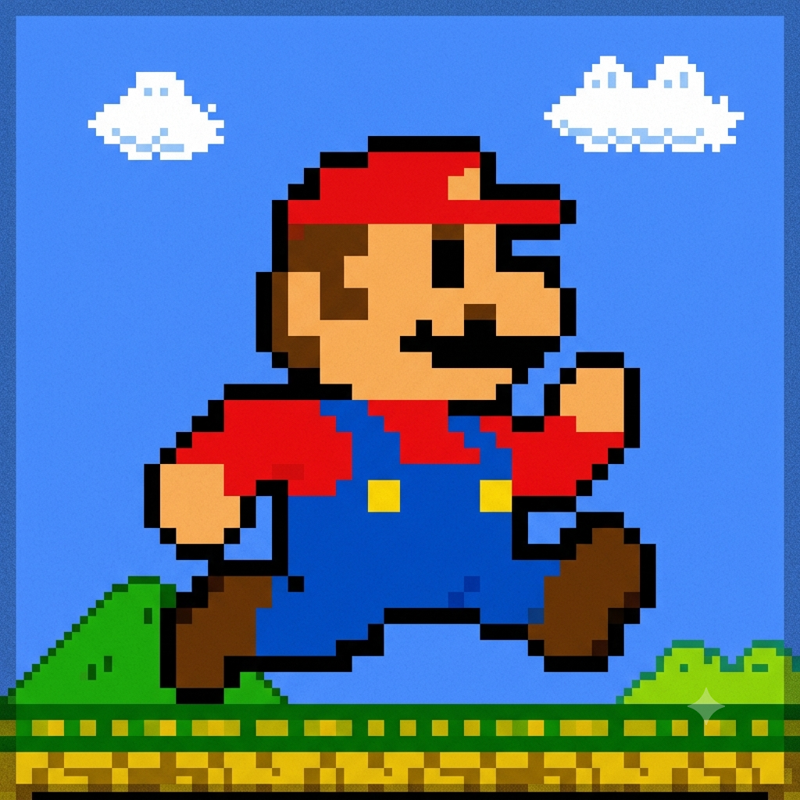
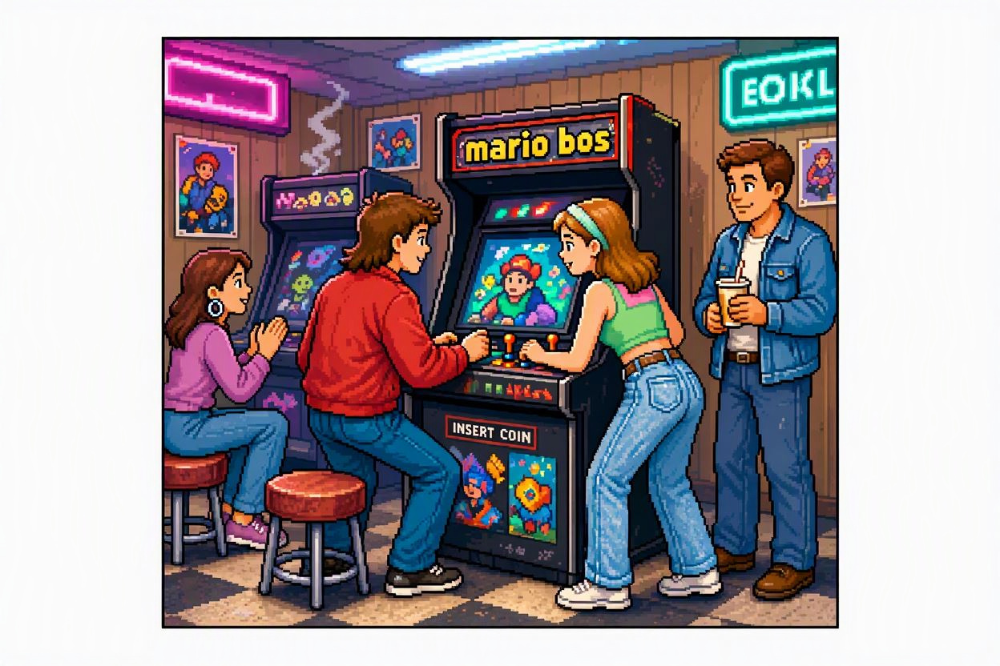

Meu primeiro post
Por: Khetlin pietski
Sejam bem vindos ao meu blog! Aqui vou comentar sobre um jogo famoso nos anos de 80 aos dias atuais.
Vou compartilhar conhecimentos sobre game

Por: Khetlin pietski
Sejam bem vindos ao meu blog! Aqui vou comentar sobre um jogo famoso nos anos de 80 aos dias atuais.

Não importa quantos anos passem, a música do Mundo 1-1 de Super Mario Bros. continua tocando no automático na cabeça de todo mundo. O verdadeiro teste de paciência da infância era ouvir que a princesa estava em outro castelo depois de passar sufoco em uma fase inteira. 🍄 Castle clearance nos anos 80 e 90 era puro suor! #SuperMario #RetroGaming #Nostalgia #Nintendo